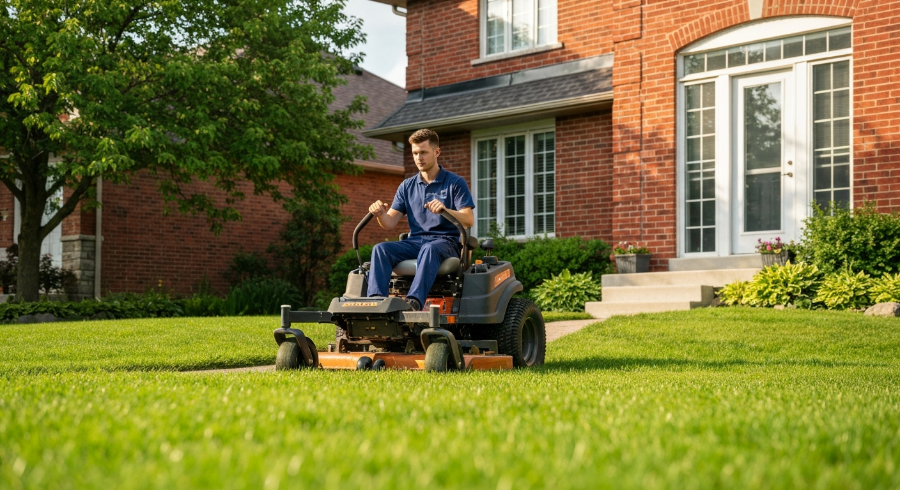
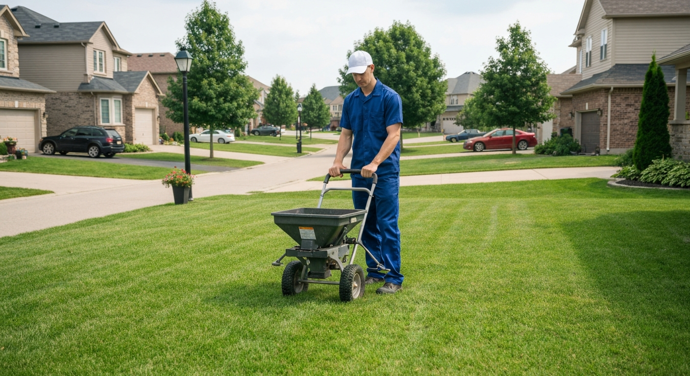
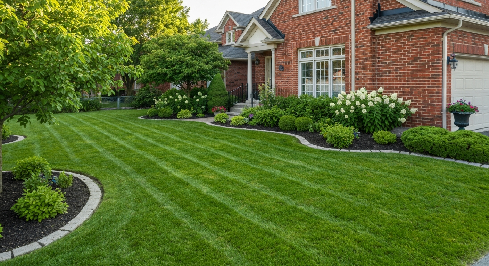
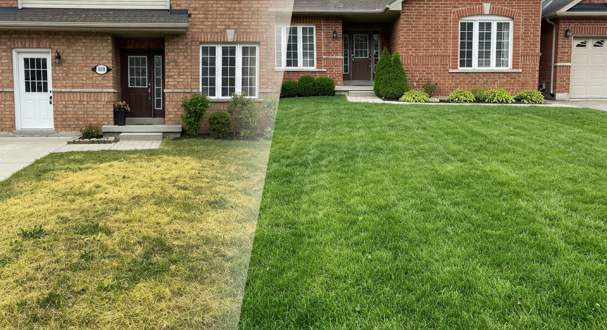
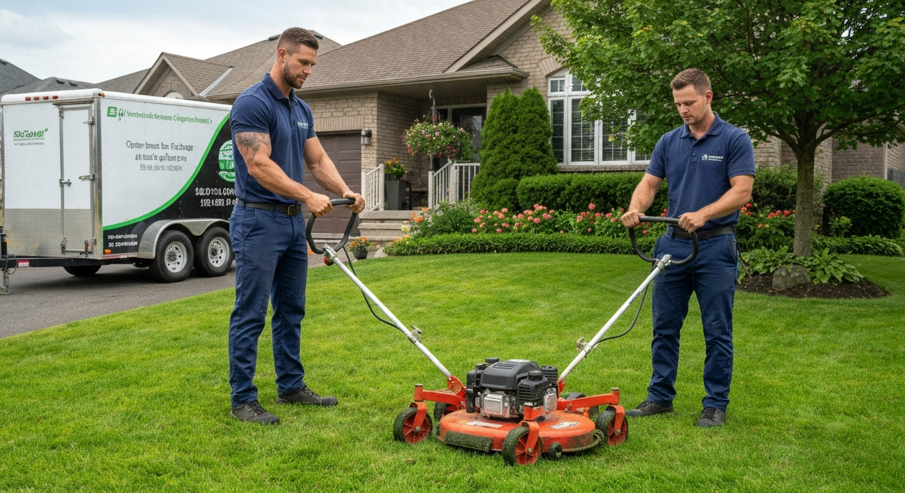

Professional lawn maintenance programs for Guelph homeowners. Mowing, fertilizing, weed control & more.
Weekly and bi-weekly mowing programs with professional equipment — edged, trimmed, and blown clean every visit.
Seasonal fertilizer programs with post-emergent and pre-emergent weed control for a thick, weed-free lawn.
Mechanical core aeration to relieve compaction and allow water and nutrients to penetrate the root zone.
Overseeding with quality grass varieties to thicken thin lawns and repair bare patches after aeration.
Leaf removal and fall cleanup services to protect your lawn from snow mould over winter.
Full-season lawn care packages covering all treatments from spring to fall — one call, everything covered.





Seasonal packages — not one-off visits that don't stick
Licensed pesticide applicators where weed control is involved
Guelph-based crew who understand local soil and grass conditions
Thicker, greener grass — not just mowed but genuinely improved
A healthy Guelph lawn requires more than mowing. The soil in much of Guelph's residential areas is clay-heavy, which compacts under foot traffic and lawn equipment, preventing water and air from reaching grass roots. Without regular aeration, even a well-fertilized lawn stays thin and weed-prone because the nutrients and water can't penetrate.
Ontario's IPM regulations changed how lawn care works. Cosmetic pesticide use — weed killers applied purely for appearance — is restricted under Ontario's Cosmetic Pesticides Ban. Weed control is still available for severe infestations, but the primary tools are cultural practices: thick grass that outcompetes weeds, proper fertilization timing, and correct mowing height. We are licensed pesticide applicators and can advise on what's permitted and what's most effective within the regulatory framework.
Mowing height matters enormously for Guelph lawns. Cool-season grasses (Kentucky bluegrass, fescues, and ryegrass — the standard Guelph lawn mix) should be mowed at 3–4 inches during the growing season. Short mowing stresses the grass, reduces root depth, and opens the lawn to weed invasion. We mow at the correct height, sharpen blades regularly (dull blades tear rather than cut, causing browning), and leave clippings on the lawn as a natural nitrogen source.
Fertilization timing for Guelph lawns: a spring application promotes green-up and growth, a mid-summer application maintains colour under heat stress, and a fall application (the most important) promotes root development and energy storage for winter survival. Fall fertilization in October is the single highest-impact treatment for most Guelph lawns.
Core aeration followed by overseeding in early September is the most effective lawn renovation treatment available without full renovation. The cores create seed-to-soil contact for new seed, the loosened soil allows root development, and overseeding fills thin areas before the growing season ends. We use quality named grass varieties appropriate for Ontario's climate, not cheap commodity seed.
We serve Guelph, Fergus, Elora, Rockwood, Cambridge, and all of Wellington County.
We provide lawn care services throughout Guelph and the surrounding region:
Lawn mowing in Guelph runs $45–$90 per visit depending on property size. Seasonal lawn care programs including fertilizing, weed control, aeration, and overseeding run $400–$800 per season for a typical Guelph residential property. We offer package pricing that's better value than individual treatments.
Fall (late August to late September) is the best time for core aeration in Guelph. The grass is actively growing, temperatures are moderate, and overseeding at the same time has the best germination conditions. Spring aeration is a second choice — avoid aerating during summer heat stress.
Ontario's Cosmetic Pesticides Ban restricts residential weed killer use. Licensed applicators can still treat serious infestations with approved products. Our primary approach is cultural — thick grass from proper fertilization and aeration is the most effective long-term weed suppression. We assess your specific situation and advise on what's permitted and effective.
During the active growing season (May–June and September), weekly mowing keeps up with growth without removing more than one-third of the blade at once. In mid-summer heat, growth slows and bi-weekly mowing may suffice. We adjust frequency with the season in our mowing programs.
The most effective fix is core aeration followed by overseeding in early September, combined with fall fertilization. This combination outperforms any spring approach because fall conditions favour germination and root establishment. For severe bare patches, we can do targeted seeding and light topdressing.
Yes — we offer one-time aeration, overseeding, and cleanup services, not just seasonal programs. However, lawn care programs deliver significantly better results because the treatments build on each other season after season. We're happy to start with a one-time treatment if you want to try us first.
Contact us today for a free, no-obligation quote for lawn care services in Guelph.